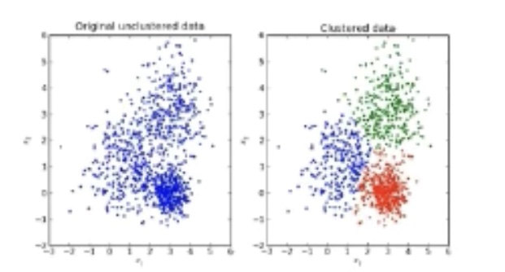
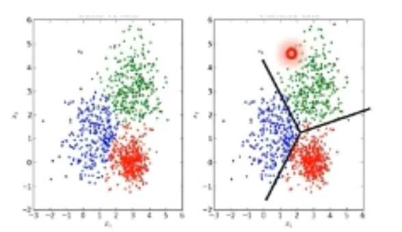
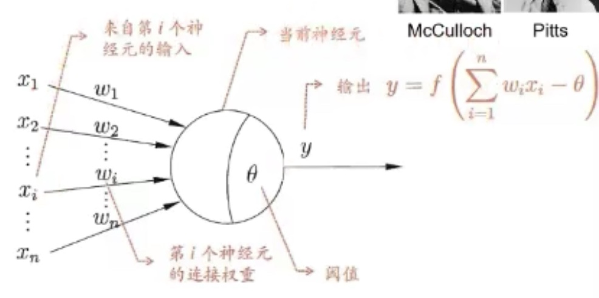
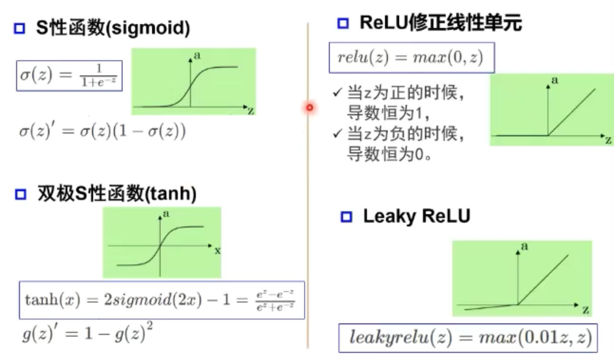
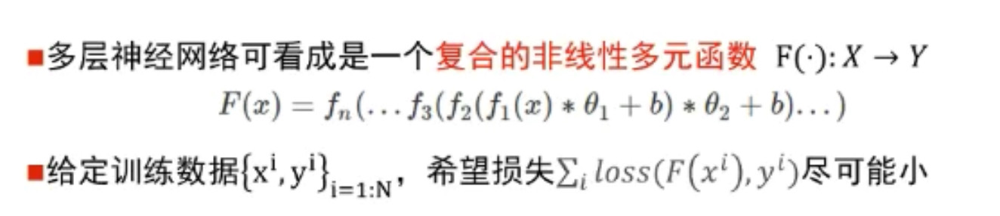
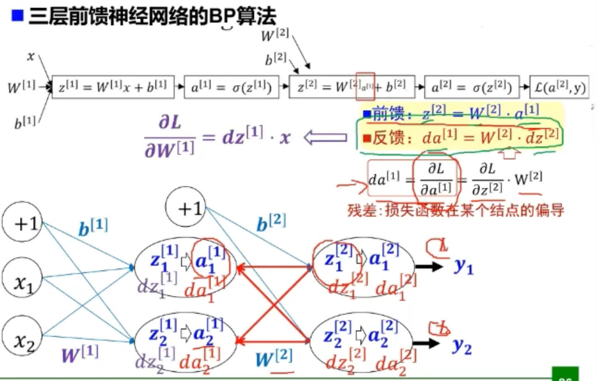
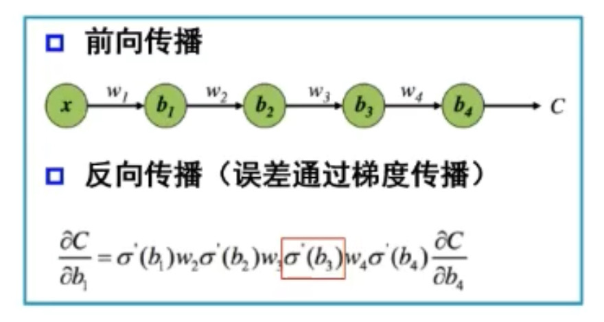
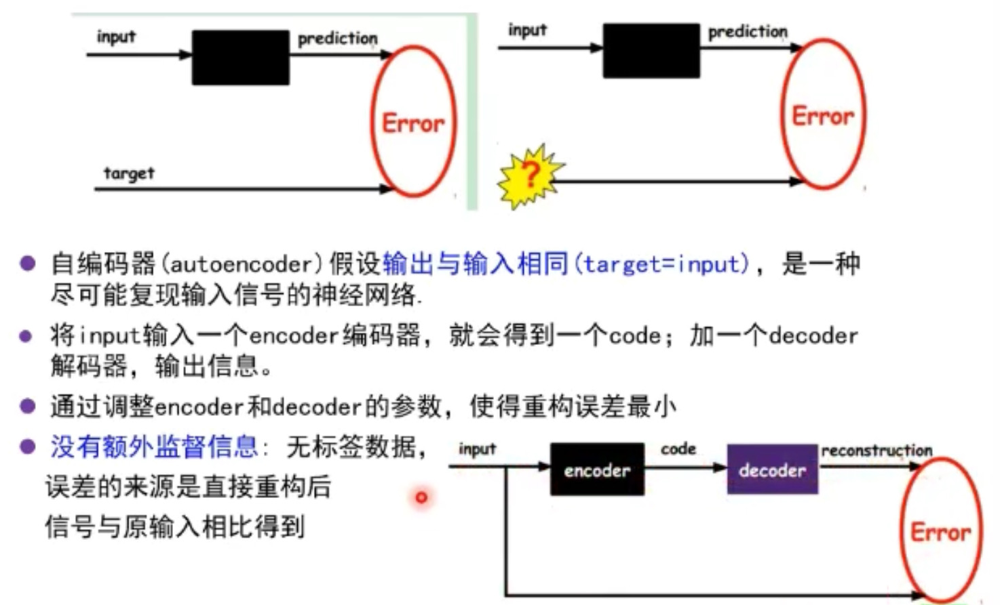
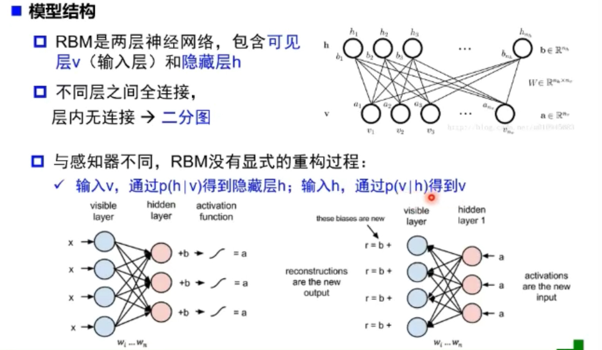

学习笔记-1
绪论&卷积神经网络基础
绪论
- 什么是人工智能
使一部机器像人一样进行感知、认知、决策、执行的人工程序或系统。 - 图灵测试
假设在一个封闭空间中，完成一个任务，外部人员能否判断出完成这个任务的是机器还是人。（验证码系统） - 逻辑演绎 VS 归纳总结
- 逻辑演绎
- 知识表达与推理
- 符号主义：使用符号、规则和逻辑来表征知识和进行逻辑推理（自上而下）
- 定理证明机、专家系统
- 归纳总结
- 模型、策略、算法
- 贝叶斯：对事件发生的可能性进行概率推理（自上而下、自下而上）
- 联结主义：模拟脑结构，使用概率矩阵来识别和归纳模式（自下而上）
- 朴素贝叶斯隐马尔科夫、神经网络
- 逻辑演绎
-
知识工程/专家系统 vs 机械学习
- 知识工程
- 根据专家定义的知识和经验，进行推理和判断，从而模拟人类专家的决策过程来解决问题。
- 基于手工设计规则建立专家系统
- 结果容易解释
- 系统构建费时费力
- 依赖专家主观经验，难以保证一致性和准确性
- 机器学习
- 建立决策树，对输入的测试内容进行标注，让其自动学习；当输入一个当内容，自动进行分类
- 基于数据自动学习
- 减少人工复杂工作，但结果可能不易解释
- 提高信息处理的效率，且准确率较高
- 来源于真实数据，减少人工规则主观性，可信度高
- 知识工程
-
模型分类
- 数据标记
-
监督学习模型：输入样本具有标记，从数据中学习标记分界面，适用于预测数据标记

-
无监督学习模型：输入样本没有标记，从数据中学习模式，适用于描述数据

-
半监督学习：部分数据标记已知
-
强化学习：数据标记未知，但知道与输出目标相关的反馈
-
- 数据分布
- 参数模型：对数据分布进行假设，待求解的数据模式/映射可以用一组有限且固定数目的参数进行刻画
- 非参数模型：不对数据分布进行假设，数据的所有统计特征都来源于数据本身
- 建模对象
- 生成模型：对输入和输出的联合分布P(X,Y)建模；从数据中先学习到X和Y的联合分布，然后通过贝叶斯公式求的P(Y|X)
- 判别模型：对已知输入X条件下输出Y的条件分布P(Y|X)建模；直接学习P(Y|X)，输入X，直接预测Y
- 数据标记
-
深度学习的“不能”
- 算法不稳定，容易被攻击；eg，一张图像加入噪声或像素点更改就会产生完全不同的输出结果
- 模型复杂度高，难以纠错和调试
- 模型层级复合程度高，参数不透明
- 端到端训练方式对数据依赖性强，模型增量性差；当样本数据量小的时候，深度学习无法体现强大拟合能力；深度学习可以进行语义标注和关系检测，但无法进一步完成图像描述（可能需要一个新的神经网络）
- 专注直观感知类问题，对开放性推理问题无能为力
- 人类知识无法有效引入进行监督，机器偏见难以避免不
神经网络基础
浅层神经网络

- 多输入信号进行累加x
- 权值w正负模拟兴奋/抑制，大小模拟强度
- 输入和超过阈值，神经元被激活
- 激活函数f
- 输入超过阈值，神经元被激活，但不一定传递
- 没有激活函数相当于矩阵相乘；每一层相当于一个矩阵，矩阵相乘仍为矩阵，即多层和一层一样

- 单层感知器
- 通过非线性激活函数，可以实现简单的逻辑非、与、或操作（线性问题），但却不可以解决异或问题（非线性问题）
- 但可以通过多层感知器实现异或问题（数字电路），第一层的感知器可以理解为对一个非线性问题进行空间变化，将其转变为一个线性分类问题
- 万有逼近定理
- 如果一个隐层包含足够多的神经元，三层前反馈神经网络（输入-隐层-输出）能以任意精度逼近任意预定的连续函数
- 双隐层感知器（输入-隐层1-隐层2-输出）逼近非连续函数
- 神经网络每一层的作用
- 每一层公式 $ x^{l+1} = f(Wx^l +b)$
- 完成输入->输出空间变换
- 升维/降维（W*x）
- 放大/缩小（W*x）
- 旋转（W*x）
- 平移（+b）
- 弯曲 a()
- 利用矩阵的线性变换和激活函数的非线性变换，将原始输入空间投影到线性可分的空间去分类/回归
- 数据训练就是为了让神经网络选择这样一种线性和非线性变换
- 增加节点：增加维度，即增加线性转换能力
- 增加层数：增加激活函数的次数，即增加非线性转换次数
- 完成输入->输出空间变换
-
误差反向传播

- 梯度和梯度下降
- 参数沿负梯度方向更新可以使函数值下降，但可能会陷入局部极值点，无法找到全局的极值点（与初始点位置有关）


- 当激活函数（sigmoid）落在饱和区的时候，其导数会很小，从而导致整个链式求导的反向传播的值很小，接近于零；从而在反向传播过程中，最后几层网络的训练效果很好，但前面的网络层因为梯度消失原因得不到很好的训练，从而在有新的训练输入后，经过前面的网络层，使得数据混乱，导致最后几层的训练失去效果
- 增加深度会造成梯度消失，误差无法传播
- 多层网络容易陷入局部极值，难以训练
- 逐层预训练

- 对每一个隐层，使用自编码器进行训练，然后再把所有隐层结合起来，然后微调
